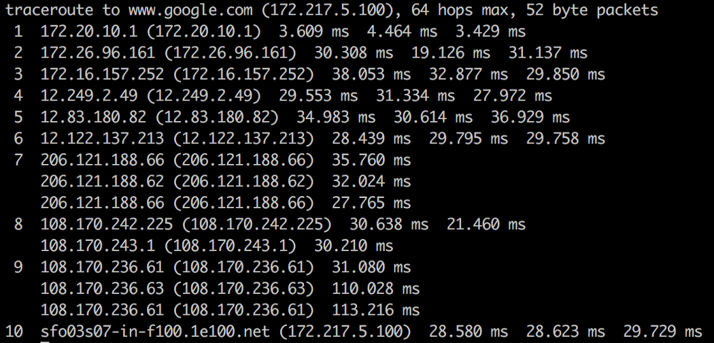

Packets
Data sent across the Internet is called a message. Before a message is sent, it is first split in many fragments called packets. These packets are sent independently of each other. The typical maximum packet size is between 1000 and 3000 characters. The Internet Protocol specifies how messages should be packetized.
What’s a packet routing network?
It is a network that routes packets from a source computer to a destination computer. The Internet is made up of a massive network of specialized computers called routers. Each router’s job is to know how to move packets along from their source to their destination. A packet will have moved through multiple routers during its journey.
When a packet moves from one router to the next, it’s called a hop. You can use the command line-tool
tracerouteto see the list of hops packets take between you and a host.The Internet Protocol specifies how network addresses should be attached to the packet’s headers, a designated space in the packet containing its meta-data. The Internet Protocol also specifies how the routers should forward the packets based on the address in the header.
Where did these Internet routers come from? Who owns them?
These routers originated in the 1960s as ARPANET, a military project whose goal was a computer network that was decentralized so the government could access and distribute information in the case of a catastrophic event. Since then, a number of Internet Service Providers (ISP) corporations have added routers onto these ARPANET routers.
There is no single owner of these Internet routers, but rather multiple owners: The government agencies and universities associated with ARPANET in the early days and ISP corporations like AT&T and Verizon later on.
Asking who owns the Internet is like asking who owns all the telephone lines. No one entity owns them all; many different entities own parts of them.
Do the packets always arrive in order? If not, how is the message re-assembled?
The packets may arrive at their destination out of order. This happens when a later packet finds a quicker path to the destination than an earlier one. But packet’s header contains information about the packet’s order relative to the entire message. The Transport Control Protocol uses this info for reconstructing the message at the destination.
Do packets always make it to their destination?
The Internet Protocol makes no guarantee that packets will always arrive at their destinations. When that happens, it’s called called a packet loss. This typically happens when a router receives more packets it can process. It has no option other than to drop some packets.
However, the Transport Control Protocol handles packet loss by performing re-transmissions. It does this by having the destination computer periodically send acknowledgement packets back to the source computer indicating how much of the message it has received and reconstructed. If the destination computer finds there are missing packets, it sends a request to the source computer asking it to resend the missing packets.
When two computers are communicating through the Transport Control Protocol, we say there is a TCP connection between them.
How does the router know where to send a packet? Does it need to know where all the IP addresses are on the Internet?
Every router does not need to know where every IP address is. It only needs to know which one of its neighbors, called an outbound link, to route each packet to. Note that IP Addresses can be broken down into two parts, a network prefix and a host identifier. For example,
129.42.13.69can be broken down intoNetwork Prefix: 129.42
Host Identifier: 13.69
All networked devices that connect to the Internet through a single connection (ie. college campus, a business, or ISP in metro area) will all share the same network prefix.
Routers will send all packets of the form
129.42.*.*to the same location. So instead of keeping track of billions of IP addresses, routers only need to keep track of less than a million network prefix.